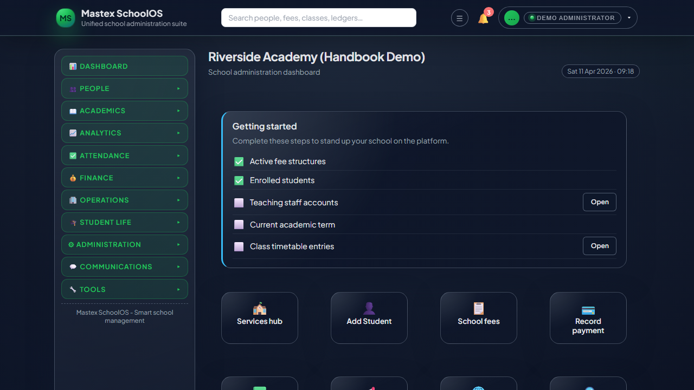
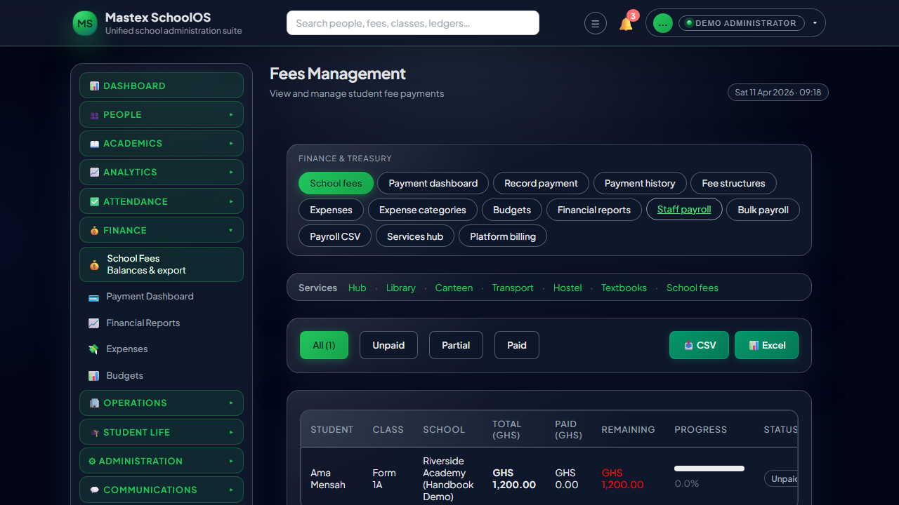
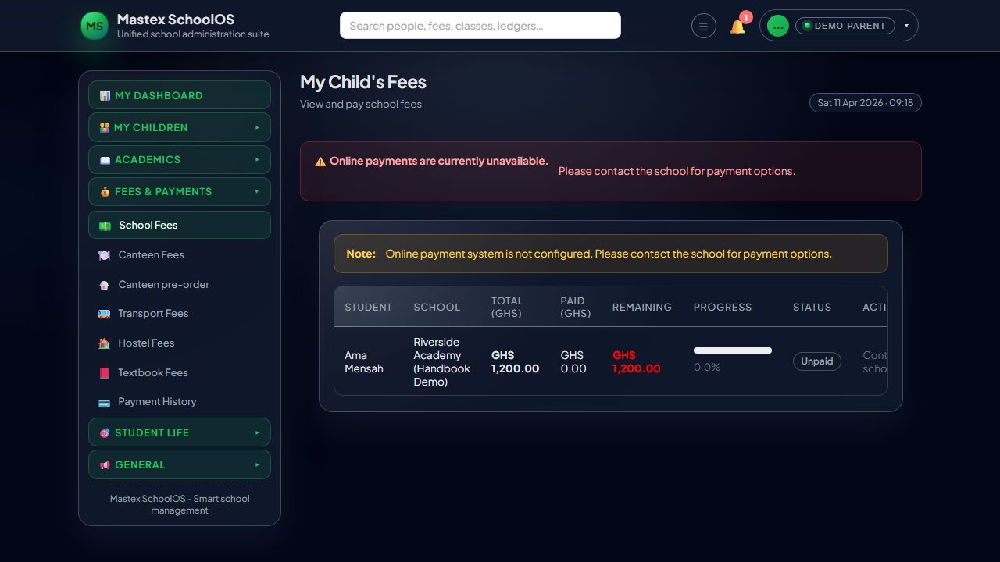
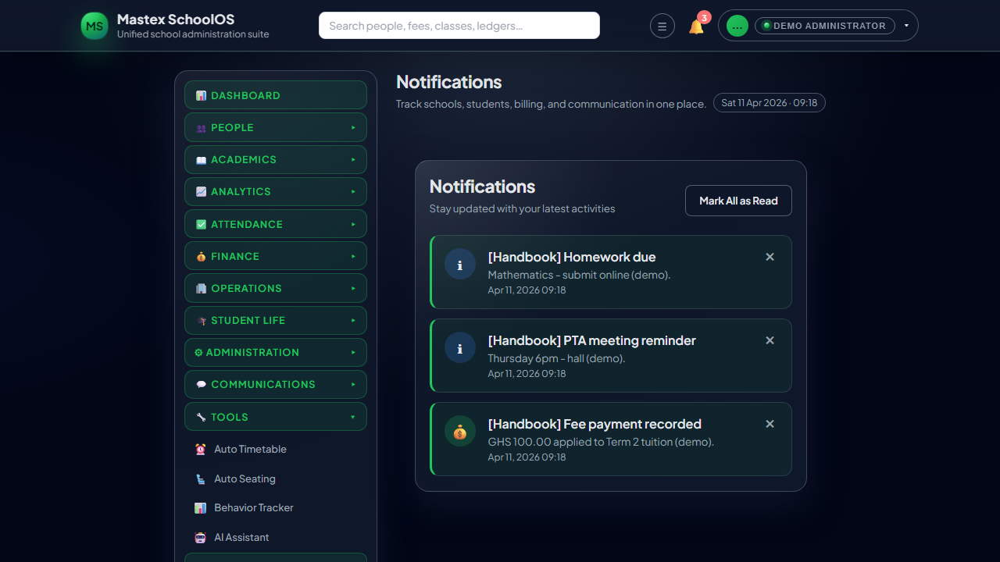

Printable handbookPress Ctrl+P / Cmd+P → Save as PDF · Paper: A4 · Turn on Background graphics for full cover styling.
M
Official user handbook
Mastex SchoolOS
The school operating system that turns scattered paperwork into a single, trusted portal — from online admission and digital learning to exams, fees, and parent confidence.
Written for your school: leadership, teachers, finance, support staff, parents, and students. Includes a full user manual with numbered steps by role so everyday tasks are easy to follow — plus strategy, benefits, and support contacts.
One secure portal per school — role-based menus; no accidental exposure of payroll or sensitive data
Online admission: public apply & track, staff pipeline, and clean hand-off into enrolled students
Digital learning stack: timetables, homework with attachments, online classes, quizzes & online exams
Schools run on information that moves between classrooms, offices, and homes. When that information lives in notebooks, WhatsApp threads, and separate spreadsheets, mistakes multiply and parents lose trust. Mastex SchoolOS is a single, secure web application built around your school’s real workflows — from online admission and digital classes to exams, fees, and parent transparency — so leaders can govern, staff can execute, and families see what matters in one branded portal.
One portalRole-based accessParent transparencyAudit-ready activity
For leadership
Visibility across enrolment, attendance, results, and fees without chasing files. Promote classes, run admissions, review analytics, and apply policy through permissions — not informal password sharing.
For teachers
Attendance, homework, results, and exams follow a consistent rhythm. Less duplication of data entry; parents hear through announcements and messages instead of only report day.
For finance teams
Fee structures, partial payments, cash or bank recording, and consolidated payment views sit next to expenses and budgets. Families pay online with card when your school enables Paystack.
For families
Parents and students open the same school-branded site: timetables, homework, results, balances, and optional services. In-app notifications reduce “no one told us” complaints.
Built for schools, not adapted from generic business software. Canteen, transport, hostel, textbooks, library loans, PT meetings, certificates, and ID cards reflect how your institution actually operates.
Mastex SchoolOS is a product of Mastex Technologies, led by Asamoah David. Schools work directly with us for licensing, onboarding, and ongoing platform support.
What your school gains (outcomes you can expect)
Below is what schools typically report after standardising on Mastex SchoolOS. Your exact timeline depends on training and how completely you move processes into the system.
1Less administrative drag. One source of truth for student records, class lists, and fee balances reduces repeated data capture and conflicting versions.
2Faster fee collection. Clear balances, payment history, and optional online checkout mean fewer disputes and shorter queues at the bursar’s window.
3Stronger parent relationships. Timetables, homework, results, and announcements are visible on demand; optional SMS reinforces urgent messages.
4Better academic oversight. Results hubs, report cards, exam tools, and analytics help leadership spot trends early instead of only at term end.
5Safer, fairer operations. Role-based menus mean a class teacher does not see the whole payroll; an audit trail supports accountability where your school enables it.
6Professional image. A modern portal signals that your school invests in organisation and communication — a factor parents notice when choosing or staying.
7Admission season under control. Online applications and status tracking shrink front-desk queues; your pipeline becomes searchable instead of a pile of folders.
8Learning continuity beyond the wall. Homework, online classes, and online exams give structured digital touchpoints — especially valuable for revision, catch-up, and blended weeks.
9Fewer exam and results disputes. Centralised schedules, marks, and report cards give leadership a defensible trail from classroom entry to parent view.
10Services revenue you can actually reconcile. Canteen, transport, hostel, and textbooks sit beside core fees so the bursar sees one financial picture per family.
Who should read this handbook before go-live
Headteacher / school admin — owns adoption, assigns roles, approves communication policy.
Bursar / accountant — owns fee structures, Paystack setup with leadership, and reconciliation habits.
ICT or admin lead — trains staff, distributes parent letters with login instructions.
Teachers — skim “Teacher” and “Notifications” sections; depth comes with weekly use.
Real-world scenarios (before & after)
These examples help boards and parent associations understand why a unified system matters. They map directly to features inside SchoolOS.
Scenario: “Parents say they never knew fees were due.”
Situation: Notices on paper or informal channels; some guardians travel or use different phone numbers.
With Mastex: Fees appear on the parent portal with running balances; in-app notifications fire when new charges or payments post; optional SMS reinforces critical reminders if your school switches that on.
Scenario: “Report day is chaos — long queues for printed slips.”
Situation: Results are prepared in isolation; parents only see outcomes once per term on paper.
With Mastex: Teachers enter or upload results in workflow; parents follow children’s results online; report cards can be generated systematically. Parents still attend meetings — but without surprise about the numbers.
Scenario: “We cannot prove who approved a discount or a refund.”
Situation: Adjustments happen verbally or in private spreadsheets.
With Mastex: Fee actions are tied to logged-in users; leadership uses school fees screens and, where enabled, audit views to review sensitive activity. Your processes stay transparent to authorised reviewers.
Scenario: “Admission season overwhelms the front office.”
Situation: Forms on paper, phone calls for status, manual lists.
With Mastex: Public apply and track flows reduce “what is my status?” calls; admission staff use the applications pipeline; successful applicants flow into student records without retyping everything.
Scenario: “Teachers spend evenings answering the same homework questions on WhatsApp.”
Situation: Instructions exist only in the classroom or scattered chats.
With Mastex: Homework is posted with deadlines; students and parents use homework views; messages keep school communication inside the platform when your policy prefers that.
Scenario: “Optional services (bus, canteen) are tracked in different notebooks.”
Situation: Parents do not see one picture of what they owe across services.
With Mastex: The services hub and linked modules bring canteen, transport, hostel, and textbook charges into the same ecosystem as core fees, with payment history for the family.
Scenario: “We want online classes but we are tired of random Zoom links in WhatsApp.”
Situation: Meeting links scatter across chats; some parents miss them; there is no single timetable-aligned record.
With Mastex: Staff schedule online classes in the academic workflow; students and parents open sessions from the same portal as timetables and homework — fewer “wrong link” moments and a more professional impression.
Scenario: “Paper-based tests do not scale — but we fear cheating if we go online.”
With Mastex:Online exams and quizzes (where your school enables them) sit alongside traditional exam schedules and results. Combine with clear policy (supervised sittings, timed attempts, question banks) so digital assessment becomes a tool — not a shortcut.
Questions schools ask before buying or going live
Do parents and students need to install an app?
No. Mastex SchoolOS runs in a web browser on phone, tablet, or computer. Your school may suggest “Add to Home Screen” for convenience — that is still the same website.
Is our data only visible to our school?
Your users see the students, fees, and records that belong to your school’s workspace. Staff and parents from another school on the same product installation cannot browse your data.
What happens if the internet is unreliable?
Like any cloud system, Mastex SchoolOS needs connectivity at the moment of use. Many schools batch critical work for peak hours and train staff to retry when links drop. Mastex Technologies can advise on hosting and uptime expectations in your agreement.
Can we start with only some modules?
Yes. Many schools begin with students + fees + parent portal, then add attendance, homework, library, or services. Feature visibility can follow your rollout plan.
How does online admission work for parents who are not tech-savvy?
The public apply and track pages use plain language and work in an ordinary phone browser — no app store required. Your school still sets expectations (help desk hours, required documents). The payoff is shorter queues and fewer repeated “what is my status?” calls.
Are online exams and quizzes secure enough for high-stakes testing?
They are tools in a policy mix. Many schools use online quizzes for frequent checks and supervised digital sittings for larger assessments, while keeping some paper finals. Mastex SchoolOS provides structure; your leadership defines invigilation, device rules, and attempt limits. We recommend pairing digital assessment with clear academic integrity communication to parents.
How do online payments reach the school?
When you enable Paystack and subaccounts in School settings, card payments route according to the arrangement your leadership sets with your bank and Paystack. The bursar still reconciles against the payment dashboard and fee lists.
What training is required?
Leadership and finance need deeper onboarding; teachers need a short session on attendance and homework; parents need a one-page sheet with your web address and how to reset passwords. This handbook supports all three.
Who builds and supports Mastex SchoolOS?
Mastex Technologies — an education-technology team focused on school operations and family engagement. The product owner is Asamoah David. Product site: mastexedu.online. For demos, licensing, implementation, or platform issues beyond your school admin team: mastex.digital.world@gmail.com · WhatsApp +233 544 789 716.
Why schools choose Mastex Technologies
Buying software is not only about features — it is about who answers the phone when term starts and who evolves the product as your needs grow. Mastex Technologies pairs Mastex SchoolOS with a direct relationship to the people who build it.
Depth without clutter
Finance, academics, admissions, services, and parent comms in one architecture — so you are not duct-taping five apps together.
Built for real school days
Flows match how bursars, registrars, teachers, and parents actually work — from partial fee payments to absence requests to online exams.
Transparent escalation
Your ICT lead and headteacher handle day-to-day configuration. Mastex Technologies handles hosting, upgrades, and defects — with a clear email line to the product owner.
Room to grow
Start with students and fees; turn on attendance, library, and services when you are ready. The same platform scales with you.
Typical next step for decision-makers
Request a guided walkthrough (fees + parent portal + academics in one session). Bring your bursar and an academic lead — you will see how one login experience replaces scattered processes.
We respond to serious enquiries from schools, trusts, and diocesan offices. Include your institution name, approximate enrolment, and what you want to fix first (fees, academics, or whole-school rollout).
Support: your school first, Mastex Technologies for the platform
Day to day, everything your school needs is inside your own portal — the same site where teachers and parents sign in. There is no separate “hidden” screen that your headteacher must learn for ordinary work.
What your school handles internally
Creating and disabling user accounts and assigning roles (through your school admin menus).
Resetting access, linking a student to the correct parent, and checking that email addresses are correct.
Configuring school settings: branding, academic year, Paystack keys (with your finance lead), and which optional features appear.
Operational decisions: fee amounts, approval of absence, admission outcomes, and message content to families.
The site does not load, returns an error for everyone, or a school-wide function stops working after your local internet is ruled out.
You need a new school year rollout, major data import, or change that touches the whole platform.
You want to expand modules, adjust hosting, or discuss backup and security expectations.
Something feels like a defect in the product rather than a wrong click or missing permission.
You do not need to know how the product is built behind the scenes. The same way you expect a bank to fix its app when it fails for all customers, you contact Mastex Technologies for platform-level problems — and your school administrator for everyday access and configuration inside your school.
Mastex SchoolOS is a web application. You use it through a browser; there is nothing to install on a parent’s phone beyond choosing “Add to Home Screen” if your school promotes that.
AI assistant (where configured), auto timetable / seating helpers; optional activity review for authorised school leadership
Some menu items appear only when your school enables a feature (for example sports, clubs, academic calendar, school events, or parent–teacher meetings).
Capability catalogue — features, benefits & how they upgrade your school
The table above summarises areas. This chapter is the sales-quality detail decision-makers, boards, and PTA councils expect: what each capability does, who uses it, and the concrete improvements you should plan messaging around. Features can be switched on per school as your rollout matures.
Why this section exists
Parents do not buy “a database.” They buy peace of mind — fees they can pay online, homework they can see, and a school that looks organised. Mastex SchoolOS is written to earn that trust feature by feature, without forcing every school to adopt everything on day one.
Admissions & online enrollment
Replace paper piles and “please call the office” with a structured digital front door that still feels personal.
What it includes
Public online application — families apply without an account; your school controls required fields and documents.
Application tracking — reference-based status lookup reduces repeated phone calls during peak season.
Internal admission pipeline — staff review, interview, document, and decision states in one workflow.
Hand-off to enrollment — successful applicants become student records without retyping names, classes, and guardians.
Optional SMS / notification hooks (where configured) to nudge applicants or staff at key steps.
Benefits for your school
Shorter queues at the front office during intake windows.
Clear audit trail of who applied, when, and how the decision evolved — valuable for disputes and governance.
More professional brand — prospective parents compare you to schools that still use only paper forms.
Faster revenue recognition when acceptance fees and first-term charges tie cleanly to the new record.
Primary users
Admission officers, school leadership, front desk, parents (public flows).
Digital learning, online classes & homework
Give teaching and learning a consistent digital layer — not a parallel universe in private chats.
What it includes
Homework — set tasks with deadlines; attach files where needed; parents and students see expectations in one place.
Online classes / meetings — schedule live sessions aligned with your academic structure so links live beside timetables and subjects.
Student & parent visibility — the same portal that shows fees also shows what must be done academically.
Works alongside timetables and calendar so digital learning is anchored to the real week, not ad hoc.
Benefits for your school
Less WhatsApp fatigue for teachers — instructions are official, dated, and retrievable.
Better support for absent learners — structured catch-up instead of “ask a friend.”
Stronger parent partnership — guardians see workload before report day surprises them.
Blended-ready posture — weather closures, revision weeks, or extension programmes scale without reinventing comms each time.
Primary users
Teachers, students, parents, academic leadership.
Exams, online exams, quizzes & results
Move from scattered mark sheets to an assessment system leadership can trust and parents can understand.
What it includes
Exam scheduling — halls, dates, and papers organised so staff and students share one plan.
Quizzes & online exams — digital attempts with controls that your academic policy defines (timing, attempts, review).
Results hub & grade workflows — marks flow toward consolidated views instead of isolated spreadsheets.
Report cards — generated with consistent branding and structure term after term.
Performance analytics — trends by class, subject, or cohort where your school enables deeper views.
Benefits for your school
Faster feedback loops — shorter path from sitting to published outcomes.
Reduced transcription error — fewer mismatches between class record and bursar-facing standing.
Defensible academic governance — leadership can show how results were produced, not only the final letter grade.
Modern assessment mix — combine paper and online where each format fits best.
Primary users
Teachers, HODs, exams office, leadership, students & parents (published views).
Timetables, academic calendar & terms
When the week is visible, everything else — fees, exams, events — lands with less friction.
What it includes
Class and teacher timetables with conflict-aware planning where your configuration supports it.
Academic calendar — terms, holidays, and key dates visible to staff and families.
Alignment hooks for homework, online classes, and events so the portal reads as one story.
Benefits for your school
Fewer clashes between tests, trips, and fee deadlines.
Less calendar chaos for parents managing multiple children.
Professional operations — the same information front desk and teachers quote.
Respect staff with the same digital seriousness you show parents.
What it includes
Staff directories, contracts, and HR-related records where your school uses them.
Leave requests and approval flows with a visible status.
Payroll registration & disbursement tooling (including Paystack payout paths where enabled and permitted).
Role changes logged so access matches responsibility.
Benefits for your school
Less payroll confusion — staff see structured payslips and history.
Fairer HR process — leave and approvals are not stuck in one inbox.
Retention signal — organised HR is part of employer brand for teachers.
Primary users
Headteacher, HR/admin, finance, staff members.
Dashboards, analytics & AI assistant
Turn operational data into decisions — not only reports filed away after meetings.
What it includes
Role-aware dashboards with KPIs for enrolment, attendance, fees, and academic signals.
Performance analytics, trends, and comparative views where enabled.
AI assistant for authorised users when your school switches it on — accelerates drafting and lookup inside policy.
Audit / activity views for leadership where configured — supports oversight without micromanagement.
Benefits for your school
Earlier intervention — spot fee leakage, attendance drops, or subject stress before term end.
Board-ready narratives backed by figures from the same system parents use.
Modern positioning — stakeholders see you as data-informed, not only tradition-led.
Primary users
Leadership, heads of department, bursar, data-minded teachers.
Rollout tip for boards: You do not need every module on day one. The winning pattern is students + fees + parent portal + notifications first, then admissions, attendance, homework, and online exams in phases — each phase advertised to parents as a visible upgrade.
Inside the product — interface tour
Mastex SchoolOS uses a modern dark interface with green accent highlights, a top bar (search, profile, notifications), and a sidebar grouped by domain (People, Academics, Finance, and so on). The figures below show real product screens from a demonstration setup so you can see how leadership, finance, parents, sign-in, and notifications look in practice. Your live school site will show your own data and branding.

https://yourschool.mastexedu.online · signed in
M
Mastex SchoolOS
Search… · Profile ▾ · 🔔
People
User management
Students
Staff
Academics
Results hub
Timetable
Finance
School fees
School overview
842
Active students
94%
Fee clearance
12
Open requests
Recent activity · announcements · quick links match your role
Figure 1. Leadership / admin experience: browser window, your school URL, branded header with notifications, sectioned sidebar, and dashboard-style summary tiles.

School fees · finance module
M
School fees
Export · Filter
Fee balances (sample)
StudentClassBalance
Ama K. · #2041Form 2AGHS 450.00
Kwesi M. · #1988Form 3BPaid
Efua T. · #2102Form 1CGHS 120.00
Staff record offline / partial payments; parents see their own children only.
Figure 2. Finance team view: structured fee list with balances in GHS, status tags, and tools your bursar uses daily.
Interface tour (continued)

Parent · School fees
M
My children’s fees
Child ▾
Term 2 · Tuition
GHS 240.00
Outstanding balance · Paystack enabled
Pay securely online
Receipt emailed after successful payment
Figure 3. Parent experience: clear balance, child selector, and Paystack checkout when the school has configured online payments.
Figure 4. Secure entry point: school-branded login, password reset, and session tied to the email on file.

In-app notifications
M
Portal
🔔 3
Notifications
Fee payment received · GHS 100
Homework due tomorrow · Mathematics
Announcement · PTA meeting
View all →
Page content
Figure 5. Bell icon and notification stream: parents and staff see fee events, homework, and school announcements without refreshing email.
Getting started
Browser and access
Use a current version of Chrome, Edge, Firefox, or Safari. Your school provides the website address (for example https://yourschool.example.com).
Signing in
Open the site and choose Sign in (or go to /accounts/login/).
Enter the username (and password) your school issued — often aligned with the email on file.
After login you land on a dashboard suited to your role.
If you forget your password, use password reset from the login page when your school has email delivery configured.
Profile and security
From the profile menu (top right): view or edit profile, change password, and sign out. Use one account per person; do not share passwords.
Finding your way
Sidebar — On large screens, features are grouped in collapsible sections (Dashboard, People, Academics, etc.).
Search — When visible in the header, search jumps to students, fees, or other records your role may access.
Services hub — A single entry point for many optional services (canteen, transport, hostel, and more).
Public admission (no login)
Visitors can often apply for admission and track an application from the home page when your school enables those links.
First-week checklist (school implementation team)
Confirm your school’s web address is on every letter to parents and on the notice board.
Headteacher or delegate: log in, open School settings, upload logo and verify academic year.
Bursar: confirm fee structures and test one parent fee view with a volunteer family.
ICT lead: create two test accounts (teacher + parent) and walk through timetable, homework, and notifications.
Send a short SMS or WhatsApp template: “Fees and news are on [URL]. Use the email we have on file to sign in; use Forgot password if needed.”
User manual — step-by-step guides (by role)
Use this chapter as your day-to-day how-to. Steps describe what you do in the menus and screens of Mastex SchoolOS. Exact labels may match your school’s wording; if a menu is missing, your school may have turned that feature off — ask your school administrator. For sign-in basics, see Getting started above.
How to read the steps: We use → to mean “then open or choose.” Always use your school’s real web address. Keep this PDF or printout near the staff room or bursar’s desk for quick answers.
Everyone — first steps in the system
Sign in
Open your school’s website in Chrome, Edge, Firefox, or Safari.
Tap or click Sign in (or open the login page your school shared).
Enter your username and password exactly as issued (watch capital letters).
Wait for your dashboard to load — it matches your role (parent, teacher, etc.).
Tip: If the page shows a short “Preparing…” splash, wait one second before clicking — the sign-in button must be clickable.
Forgot password
On the login page, click Forgot password (or similar).
Enter the email address your school has on file (often the same as your username or linked to it).
Check your email inbox (and spam folder) for reset instructions.
Choose a new password you do not use on other websites.
If no email arrives, your school may not have mail configured — contact the school office or ICT lead, not Mastex Technologies first.
Profile, password change, sign out
Click your name or profile in the top-right corner.
Open Profile or Edit profile to update phone or details if your school allows it.
Use Change password anytime you suspect someone else saw your password.
Click Sign out when finished on a shared computer (computer lab, reception PC).
Notifications (bell)
Look for the bell icon in the top bar.
Click it to see recent alerts (fees, homework, announcements, approvals).
Open View all for the full notification list when you need history.
Find features in the sidebar
On a computer, read the left sidebar — sections group related items (e.g. Academics, Finance).
On a phone, open the menu (often ☰) to see the same groups.
Use Search in the header when your role has it — type a student name or keyword.
Parents & guardians
See all your children and their overview
Sign in → open Dashboard or Children overview (wording may vary).
Confirm each child listed is correct; if a child is missing, contact the school office to link your account.
Check school fees and balances
Open the sidebar → Fees or School fees (or Finance group).
Select the child if you have more than one.
Read amount due, amount paid, and any outstanding balance.
Open Payment history when you need receipts or past transactions.
Pay fees online (Paystack)
From School fees, find the fee with an outstanding balance.
Click Pay, Pay online, or similar.
Complete the Paystack checkout (card or mobile money as offered).
Wait for success — then check notifications and payment history for confirmation.
If Paystack is not shown, your school may use cash or bank only — pay at the bursar and ask them to record it in the system.
View homework and academic work
Sidebar → Academics → Homework (or your child’s homework list).
Open each task to see instructions, due date, and any attachments.
Use Submissions where shown to confirm your child uploaded work if required.
View results and report-related information
Sidebar → Results or Children’s results (under Academics).
Select the child and the term or assessment when asked.
When the school publishes report cards, open them from the same academic area when visible.
Request absence for your child
Sidebar → Absence or Absence request (sometimes under Students or General).
Choose the child, dates, and reason; submit the form.
Watch the bell for approved or rejected; follow up at the office if it stays pending.
Parent–teacher meetings, events, announcements
PT meetings: open the PT meeting section → choose a slot or session your school offers → confirm.
Events & calendar: open Calendar or Events to see school dates.
Announcements: open Announcements for official notices; do not rely only on WhatsApp.
Open Services hub or the specific item (Canteen, Transport, etc.) from the sidebar.
Follow the on-screen steps to order, register, or pay as your school configured.
Check Payment history for service charges alongside school fees.
Students
Daily routine: timetable and homework
Sign in → open My timetable or Timetable to see today’s lessons.
Open Homework → note due dates and download any attachments.
Submit homework online when your teacher expects an upload — use the Submit or upload control on the task.
Check your own fees
Sidebar → School fees or Fees.
Read your balance; speak with your guardian before the deadline if payment is needed.
Use Payment history to see what was already paid.
Online classes, quizzes, and online exams
When your teacher schedules an online class, open it from Online classes or the link shown next to your timetable — join at the scheduled time.
For quizzes or online exams, open the assessment from the Academics area → read instructions → start only when allowed.
Submit before the timer ends if a time limit applies; ask your teacher immediately if the page freezes.
Absence request, library, ID and certificates
Absence: submit a request the way your school requires (before or on the day) and watch for approval in notifications.
Library: open My library books to see what you borrowed and when to return.
ID / certificates: open My ID card or My certificates when the school has issued them.
Teachers
Start the day: timetable and attendance
Open My timetable to confirm class, room, and period.
Open Mark attendance (or Student attendance) for your class.
Mark each learner present, absent, late, or excused as your school defines.
If your school uses QR attendance, open the scanner tool and follow the on-screen flow.
Set homework
Sidebar → Homework → Create or New homework.
Choose class or group, write instructions, set due date, attach files if needed.
Save or Publish so parents and students see it immediately.
Results, assessments, and scores
Open Results, Upload results, or Assessment scores (labels depend on your school).
Select class and subject → enter marks according to school policy.
Save; double-check before leadership publishes to parents.
Online classes, quizzes, exams
Online classes: create or open a scheduled session → paste or generate the meeting link → ensure students see it in their portal.
Quizzes / online exams: use the exams or quiz tools your menu shows → set duration and attempts if applicable → publish when ready.
Grading: open Grade essays or marking views when your school uses them.
Announcements and messages
Use Announcements for whole-class or school-visible notices (when you have permission).
Use Messages for conversations your school approves — keep learning instructions on homework where possible.
Accountant / bursar
Set up or review fee structures
Sidebar → Finance → Fee structure (or similar).
Create or edit structures for class, amount, and term as your school requires.
Use Generate fees (if shown) to create charges for students from a structure.
Work the school fees list
Open School fees → use filters (unpaid, partial, paid) to prioritise follow-up.
For cash or bank payments, use Record payment / Mark paid / Partial payment as appropriate.
Always tie actions to the correct student and fee row.
Payment dashboard and reports
Open Payment dashboard for a consolidated view of inflows (with filters if offered).
Open Financial reports for leadership or board packs.
Use Expenses and Budgets when your school tracks outflows in the same system.
Paystack (online payments)
Confirm with leadership that School settings has correct Paystack / subaccount details.
Test a small parent payment with a volunteer before advertising to all families.
Reconcile Paystack settlements with the fee list and bank statements regularly.
School administrator / headteacher
First-time school setup (essentials)
Sign in → open School settings or School profile (under Administration or Schools).
Set school name, logo, academic year, and contact details parents will recognise.
Confirm which features are visible (your implementation plan may turn modules on in phases).
Create or manage staff accounts
People → Staff or User management → Add staff / Register.
Enter name, email, username, role (teacher, accountant, etc.).
Issue a temporary password or use the school’s password policy; ask staff to change it on first login if enforced.
Students, parents, and classes
Maintain accurate student records and class assignments; use Promote class at year-end per school policy.
Link each student to the correct parent account so fees and reports show in the right portal.
Use Alumni or exit workflows when learners leave — keeps active lists clean.
Oversight dashboards
Open your School dashboard daily for enrolment, attendance, fee, and academic indicators.
Use Analytics menus for deeper views when enabled.
Use Audit or activity tools only if your role includes them — for governance, not routine spying.
Admission officer
Process applications from the pipeline
Open Applications or Admissions from the sidebar.
Open one application → review details and documents → update status (e.g. under review, interview, offered).
Add internal notes your school agrees on so the next officer can continue without phone handoffs.
When an applicant is accepted, follow your school’s steps to create or link the student record.
Help families who applied online
Remind families they can track with the reference number from their application.
If they cannot find the form, send the exact link from your school’s home page (apply / track).
Librarian
Catalogue and circulation
Open Services hub → Library (or direct Library menu).
Use Manage library / Catalog to add or edit books.
For each loan: Issue to a student → set due date → confirm.
On return, use Return or close the issue so fines and availability stay accurate.
Deputy head, HOD, admin assistant, general staff
Deputy head / HOD
Use Students and Staff lists for oversight; open Attendance summaries for patterns.
Support Homework and Timetable quality across departments.
Open Financial reports or Payments only when your role includes them — coordinate with the bursar for interpretation.
Admin assistant
Help maintain directories (staff, parents, students) under direction of leadership.
Post or update Announcements and Documents when authorised.
Direct visitors to Services hub for canteen, transport, or other sign-ups.
General staff
Use My timetable and Announcements as your main daily tools.
Open Students only for legitimate school work; never share portal passwords.
School nurse
Health records and visits
Open Health records or Health visits from your menu (often under Student life or Operations).
Select the student → record the visit: symptoms, action taken, follow-up if your form includes it.
Save so leadership has a consistent log for safeguarding and parent conversations — never replace official medical care.
Only access records for learners you are authorised to support; follow your school’s confidentiality policy.
If something goes wrong
Quick checks (try these first)
Refresh the page or try another browser.
Confirm Wi‑Fi or mobile data is working on another site.
Check Caps Lock and your username (not email, unless your school uses email as username).
Clear old sessions: Sign out fully, then sign in again.
Who to contact
Wrong class, missing child, password for one user, fee question: your school office or school administrator.
Whole school cannot log in or site error for everyone: school ICT lead first, then Mastex Technologies if the platform is confirmed down — see Support in this handbook.
Notifications & messaging
In-app notifications
The bell icon in the header shows recent alerts; open View all for the full list at /notifications/.
You may be notified when, for example:
A result is posted or updated (parents)
A fee is assigned or a payment is recorded (parents)
An absence request is approved or rejected
The school publishes announcements, calendar entries, or events for your audience
Very large announcements are sometimes throttled so the system stays fast for everyone; limits are set by Mastex Technologies or your school’s technical partner — not something parents or teachers adjust.
SMS
Optional SMS (for example fees or admissions) uses mNotify when the school has configured it. SMS is never a substitute for checking the portal for full detail.
Chat and broadcasts
Staff with permission can use internal messaging and broadcast tools (SMS / email) where enabled. Message history helps the school demonstrate what was sent and when.
Roles & access
Every user has a primary role. Some accounts also have secondary roles (for example teacher plus librarian). If an action is blocked or a menu is missing, your role or school settings are the usual reasons.
Role
Typical purpose
Headteacher / School Admin
Full management of your school (people, academics, finance, operations)
Deputy Head / HOD
Leadership subset: people, academics, attendance, some finance
Own study tools, fees, library, exams, absence, ID & certificates
What each role can do (detailed)
These lists mirror the sidebar menus in Mastex SchoolOS. If an item is missing, your school may have turned that feature off or your account may need an extra secondary role (for example librarian) assigned by your school administrator.
School leadership (Headteacher / Admin)
This is the broadest school-side role: strategy, compliance, and oversight across people, learning, and money.
General: announcements, absence request and list, AI assistant, notifications
Web addresses (reference)
Paths below are added after your school’s main web address. Most users never type them — they click menus. Trainers and ICT leads use this list for bookmarks and helpdesk scripts.
Path suffix (example)
What it is for
/accounts/
Sign-in, profile, dashboards, user management (school admin)
Admissions, attendance, services hub, library, events, and more
/messaging/
SMS / email broadcasts, chat, message history (as enabled)
/notifications/
In-app notification inbox
/audit/
Activity review for authorised leadership (where enabled)
/schools/
School profile & settings (e.g. branding, year, payment keys)
/ai/
AI assistant (where your school turns it on)
/portal/
Shortcut portal entry (depends on role)
Platform engineering and multi-school operations are handled by Mastex Technologies — not screens your day-to-day users need. If something breaks for everyone at once, contact mastexedu.online, email, or WhatsApp; if one user cannot log in, start with your school administrator.
Keep phone and email accurate on every profile — SMS, password reset, and Paystack receipts depend on them.
One login per person — never share passwords; create a second parent login if two guardians need separate access.
Enter the official guardian email the first time; changing it later is easy but forgotten inboxes cause “I never got the reset” tickets.
Check the bell (notifications) after paying fees or submitting absence — approvals and receipts land there.
Use Services hub as the first stop for canteen, bus, hostel, and textbook money so balances stay in one ecosystem.
Train front desk staff to say “log in to the school portal” instead of sending fee screenshots only — reduces disputes.
First-line help inside your school
School administrator / ICT lead: passwords, roles, wrong class, student linked to wrong parent.
Bursar: fee amounts, waivers recorded as adjustments, Paystack settlement questions with the bank.
Class teacher: homework visibility, attendance correction same-day where policy allows.
Escalate to Mastex Technologies when…
The whole school cannot sign in, or pages show a server error for all users.
You need a planned upgrade, data migration, or new module enabled subscription-wide.
You believe the software itself is wrong after your admin has reproduced the issue.
Menus evolve. Your school may enable more modules over time. If this handbook and the live sidebar differ, trust the live menu — then ask Mastex Technologies for an updated PDF if you rely on printed copies.
M
Mastex SchoolOS
Academics · Finance · Operations · Family engagement
Your school’s portal URL (write in when printing):
Serious schools deserve software that respects how they run. When you are ready to modernise fees, academics, and parent trust in one move — we are ready to talk.